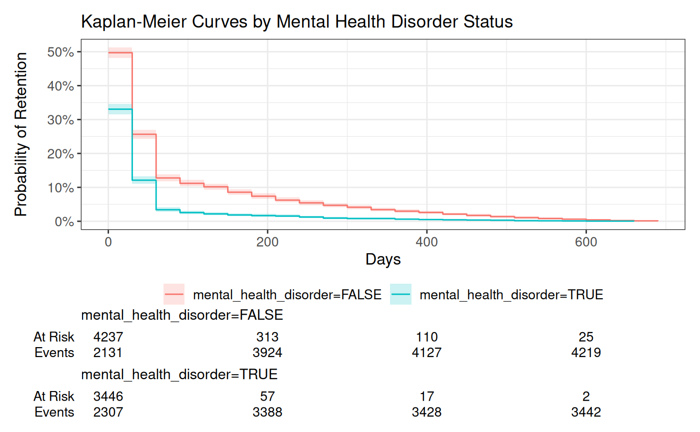
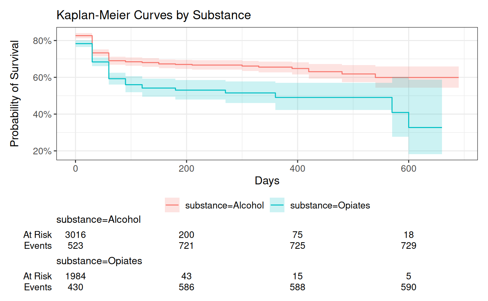

Survival Analysis with episodes and tidymodels
survival.RmdIntroduction
The {episodes} package segments longitudinal data into meaningful episodes based on temporal gaps and variable changes. It’s designed for analyzing treatment patterns, patient journeys, and other time series data where interruptions and changes in covariates are important to model.
This vignette demonstrates how to apply these features to survival
analysis using {tidymodels} to run Cox proportional hazards models with
both fixed and time-varying covariates. I will be using the simulated
substance_use dataset included in the package.
Required Packages
library(episodes)
library(tidymodels)
library(censored)
library(survival)
library(ggsurvfit)
library(dplyr)
surv_spec <- proportional_hazards() |>
set_engine("survival")Time to Discontinuation Analysis
Creating Episodes with Fixed Covariates
Our first example examines time to treatment discontinuation, using a fixed-effects approach where covariates are considered constant throughout the episode.
episodes_fixed <- substance_use |>
group_by(client_id) |>
segment_episodes(
date_col = visit_date,
gap_threshold = 60,
gap_unit = "days",
progress = FALSE
)
model_result <- workflow() |>
add_formula(
Surv(episode_days, discontinued) ~
age + gender + race + substance + medication + mental_health_disorder +
died_ever + cluster(client_id)
) |>
add_model(surv_spec) |>
fit(data = episodes_fixed) |>
extract_fit_parsnip() |>
tidy(exponentiate = TRUE, conf.int = TRUE, conf.level = 0.95)
model_result
#> # A tibble: 17 × 7
#> term estimate std.error statistic p.value conf.low conf.high
#> <chr> <dbl> <dbl> <dbl> <dbl> <dbl> <dbl>
#> 1 age 1.00 8.44e-4 0.708 4.79e- 1 0.999 1.00
#> 2 mental_health_diso… 0.689 2.41e-2 -15.5 5.24e-54 0.657 0.722
#> 3 mental_health_diso… NA 0 NA NA NA NA
#> 4 died_everTRUE 1.40 2.69e-2 12.4 1.94e-35 1.32 1.47
#> 5 `cluster(client_id… 1.00 7.96e-6 0.598 5.50e- 1 1.00 1.00
#> 6 genderFemale 1.02 2.33e-2 0.833 4.05e- 1 0.974 1.07
#> 7 genderNon-binary 1.11 6.01e-2 1.67 9.50e- 2 0.983 1.24
#> 8 raceBlack 1.02 3.28e-2 0.483 6.29e- 1 0.953 1.08
#> 9 raceHispanic 0.974 3.28e-2 -0.797 4.25e- 1 0.914 1.04
#> 10 raceAsian 0.920 5.32e-2 -1.57 1.17e- 1 0.829 1.02
#> 11 raceOther 1.06 5.47e-2 1.00 3.17e- 1 0.949 1.18
#> 12 substanceOpiates 1.15 4.24e-2 3.39 7.03e- 4 1.06 1.25
#> 13 medicationDisulfir… 0.940 4.25e-2 -1.45 1.46e- 1 0.865 1.02
#> 14 medicationAcampros… 0.988 3.87e-2 -0.309 7.57e- 1 0.916 1.07
#> 15 medicationNaltrexo… 0.973 3.69e-2 -0.741 4.59e- 1 0.905 1.05
#> 16 medicationMethadone 1.01 5.95e-2 0.153 8.78e- 1 0.898 1.13
#> 17 medicationBuprenor… 0.996 5.62e-2 -0.0735 9.41e- 1 0.892 1.11Interpreting the Results
The model results show hazard ratios (HR) for each variable, where: - HR < 1: Reduced risk of discontinuation (better retention) - HR > 1: Increased risk of discontinuation (worse retention) - HR = 1: No effect on discontinuation risk
Key findings:
Mental health disorder: Clients with mental health disorders have significantly better retention (HR = 0.689, 95% CI: 0.657-0.722), indicating a 31.1% reduction in discontinuation risk.
Mortality: Clients who died have a 40% higher risk of treatment discontinuation (HR = 1.40, 95% CI: 1.32-1.47).
Substance type: Opiate users have a 15% higher risk of discontinuation compared to alcohol users (HR = 1.15, 95% CI: 1.06-1.25).
Demographics: Age, gender, and race show minimal effects on treatment retention in this model.
Medications: None of the medications show statistically significant effects on retention, though point estimates suggest small protective effects for most treatments.
Visualizing Survival by Mental Health Disorder Status
We can visualize these differences with Kaplan-Meier curves:
surv_curves <- survfit(
Surv(episode_days, discontinued) ~ mental_health_disorder,
data = episodes_fixed
)
ggsurvfit(surv_curves) +
add_confidence_interval() +
add_risktable() +
scale_y_continuous(labels = scales::percent) +
labs(
x = "Days",
y = "Probability of Retention",
title = "Kaplan-Meier Curves by Mental Health Disorder Status"
)
The Kaplan-Meier plot confirms our model findings - clients with mental health disorders (blue line) have substantially better retention over time compared to those without (red line). At 500 days, approximately 40% of clients with mental health disorders remain in treatment, compared to only about 20% of those without. The non-overlapping confidence intervals indicate this difference is statistically significant throughout the observation period.
Time-Varying Covariates Model
The segment_episodes_by_covars function creates a
dataset where observations are split whenever a specified covariate
changes value. This allows us to incorporate time-varying covariates in
survival analysis.
episodes_tv <- substance_use |>
group_by(client_id) |>
segment_episodes_by_covars(
date_col = visit_date,
covar_cols = c(
"frequency_of_use", "housing"
),
gap_threshold = 60,
gap_unit = "days",
progress = FALSE
) |>
group_by(client_id, episode_id) |>
add_surv_time()
tv_model_result <- workflow() |>
add_formula(
Surv(time = start_time, time2 = end_time, event = discontinued) ~
age + gender + race + substance + medication + mental_health_disorder +
frequency_of_use + housing + died_ever + cluster(client_id)
) |>
add_model(surv_spec) |>
fit(data = episodes_tv) |>
extract_fit_parsnip() |>
tidy(exponentiate = TRUE, conf.int = TRUE, conf.level = 0.95)
tv_model_result
#> # A tibble: 24 × 7
#> term estimate std.error statistic p.value conf.low conf.high
#> <chr> <dbl> <dbl> <dbl> <dbl> <dbl> <dbl>
#> 1 age 1.00 8.45e-4 0.846 3.98e- 1 0.999 1.00
#> 2 mental_health_diso… 0.678 2.41e-2 -16.1 1.90e-58 0.647 0.711
#> 3 mental_health_diso… NA 0 NA NA NA NA
#> 4 died_everTRUE 1.21 2.84e-2 6.73 1.67e-11 1.14 1.28
#> 5 `cluster(client_id… 1.00 7.96e-6 0.367 7.13e- 1 1.00 1.00
#> 6 genderFemale 1.02 2.34e-2 1.00 3.17e- 1 0.978 1.07
#> 7 genderNon-binary 1.10 6.02e-2 1.52 1.29e- 1 0.974 1.23
#> 8 raceBlack 1.02 3.28e-2 0.734 4.63e- 1 0.961 1.09
#> 9 raceHispanic 0.991 3.28e-2 -0.289 7.72e- 1 0.929 1.06
#> 10 raceAsian 0.922 5.32e-2 -1.53 1.27e- 1 0.831 1.02
#> # ℹ 14 more rowsInterpreting Time-Varying Results
When we include time-varying covariates, we gain additional insights:
- Mental health disorder continues to show a strong protective effect (HR = 0.678, 95% CI: 0.647-0.711), consistent with our fixed-effects model.
- Housing status emerges as a significant predictor (housing.L, HR = 1.62, 95% CI: 1.53-1.72), suggesting clients with unstable housing have a 62% higher risk of discontinuation.
- Mortality risk shows a slightly attenuated effect (HR = 1.21 vs. 1.40 in the fixed model), suggesting some of the association is explained by time-varying factors.
- Substance type: Opiate use remains associated with higher discontinuation risk (HR = 1.17, 95% CI: 1.07-1.27).
- Frequency of use shows no clear linear relationship with retention.
The time-varying model provides a more nuanced understanding of retention dynamics, highlighting the importance of housing stability as a key factor in treatment continuation.
Time to Death (Last Episode)
Last Episode Analysis
We can also analyze time to death, focusing only on the last episode for each client:
episodes_fixed_death <- substance_use |>
group_by(client_id) |>
segment_episodes(
date_col = visit_date,
gap_threshold = 60,
gap_unit = "days",
episodes = "last",
progress = FALSE
)
death_model_result <- workflow() |>
add_formula(
Surv(episode_days, died_ever) ~
age + gender + race + substance + medication + mental_health_disorder
) |>
add_model(surv_spec) |>
fit(data = episodes_fixed_death) |>
extract_fit_parsnip() |>
tidy(exponentiate = TRUE, conf.int = TRUE, conf.level = 0.95)
death_model_result
#> # A tibble: 15 × 7
#> term estimate std.error statistic p.value conf.low conf.high
#> <chr> <dbl> <dbl> <dbl> <dbl> <dbl> <dbl>
#> 1 age 1.00 0.00204 1.56 1.20e- 1 0.999 1.01
#> 2 mental_health_diso… 0.405 0.0560 -16.1 1.55e-58 0.363 0.452
#> 3 mental_health_diso… NA 0 NA NA NA NA
#> 4 genderFemale 0.948 0.0563 -0.951 3.42e- 1 0.849 1.06
#> 5 genderNon-binary 1.06 0.143 0.389 6.98e- 1 0.799 1.40
#> 6 raceBlack 1.10 0.0784 1.16 2.47e- 1 0.939 1.28
#> 7 raceHispanic 1.05 0.0778 0.633 5.26e- 1 0.902 1.22
#> 8 raceAsian 0.911 0.130 -0.719 4.72e- 1 0.705 1.18
#> 9 raceOther 1.33 0.123 2.34 1.95e- 2 1.05 1.70
#> 10 substanceOpiates 1.29 0.0918 2.76 5.70e- 3 1.08 1.54
#> 11 medicationDisulfir… 0.900 0.109 -0.968 3.33e- 1 0.726 1.11
#> 12 medicationAcampros… 0.853 0.100 -1.59 1.12e- 1 0.700 1.04
#> 13 medicationNaltrexo… 0.859 0.0890 -1.70 8.87e- 2 0.722 1.02
#> 14 medicationMethadone 0.979 0.120 -0.174 8.62e- 1 0.773 1.24
#> 15 medicationBuprenor… 0.904 0.116 -0.869 3.85e- 1 0.721 1.13Interpreting Mortality Results
The mortality analysis reveals significant protective and risk factors:
- Mental health disorder: Strong protective association with mortality (HR = 0.405, 95% CI: 0.363-0.452), suggesting a 59.5% reduction in mortality risk for clients with mental health disorders.
- Substance type: Opiate users have a 29% higher mortality risk compared to alcohol users (HR = 1.29, 95% CI: 1.08-1.54).
- Race: “Other” race category shows elevated mortality risk (HR = 1.33, 95% CI: 1.05-1.70).
- Medications: While not reaching statistical significance at p<0.05, there’s a trend toward protective effects for several medications, particularly Acamprosate (HR = 0.853) and Naltrexone (HR = 0.859).
These findings highlight the complex relationship between mental health comorbidity and substance use outcomes, with mental health disorders associated with both better retention and lower mortality.
Visualizing Survival by Substance Type
surv_curves_substance <- survfit(
Surv(episode_days, died_ever) ~ substance,
data = episodes_fixed_death
)
ggsurvfit(surv_curves_substance) +
add_confidence_interval() +
add_risktable() +
scale_y_continuous(labels = scales::percent) +
labs(
x = "Days",
y = "Probability of Survival",
title = "Kaplan-Meier Curves by Substance"
)
The survival curves by substance type show that opiate users (red line) have consistently worse survival outcomes compared to alcohol users (blue line). The separation of curves begins early and widens over time, with approximately 85% of alcohol users surviving to 1000 days compared to only about 75% of opiate users. The risk table shows how the number at risk decreases over time for both groups.
Time-Varying Death Analysis
For a more nuanced analysis, we can incorporate time-varying covariates:
episodes_tv_death <- substance_use |>
group_by(client_id) |>
segment_episodes_by_covars(
date_col = visit_date,
covar_cols = c(
"died_last_visit", "frequency_of_use", "housing"
),
gap_threshold = 60,
gap_unit = "days",
progress = FALSE
) |>
group_by(client_id, episode_id) |>
add_surv_time()
death_tv_model <- workflow() |>
add_formula(
Surv(time = start_time, time2 = end_time, event = died_last_visit) ~
age + gender + race + substance + medication + mental_health_disorder +
frequency_of_use + housing + cluster(client_id)
) |>
add_model(surv_spec) |>
fit(data = episodes_tv_death) |>
extract_fit_parsnip() |>
tidy(exponentiate = TRUE, conf.int = TRUE, conf.level = 0.95)
death_tv_model
#> # A tibble: 23 × 7
#> term estimate std.error statistic p.value conf.low conf.high
#> <chr> <dbl> <dbl> <dbl> <dbl> <dbl> <dbl>
#> 1 age 1.00 0.00204 2.06 3.94e- 2 1.00 1.01
#> 2 mental_health_diso… 0.505 0.0565 -12.1 1.45e-33 0.452 0.565
#> 3 mental_health_diso… NA 0 NA NA NA NA
#> 4 `cluster(client_id… 1.00 0.0000192 -0.329 7.42e- 1 1.00 1.00
#> 5 genderFemale 0.953 0.0564 -0.855 3.93e- 1 0.853 1.06
#> 6 genderNon-binary 0.987 0.143 -0.0903 9.28e- 1 0.745 1.31
#> 7 raceBlack 1.08 0.0784 1.01 3.15e- 1 0.928 1.26
#> 8 raceHispanic 1.13 0.0781 1.58 1.14e- 1 0.971 1.32
#> 9 raceAsian 0.943 0.130 -0.452 6.51e- 1 0.730 1.22
#> 10 raceOther 1.25 0.124 1.80 7.25e- 2 0.980 1.59
#> # ℹ 13 more rowsInterpreting Time-Varying Mortality Results
The time-varying mortality model reveals additional important factors:
- Housing status emerges as the strongest predictor (housing.L, HR = 3.25, 95% CI: 2.91-3.62), indicating that unstable housing is associated with more than three times the risk of mortality.
- Substance type: Opiate use shows an even stronger association with mortality (HR = 2.11, 95% CI: 1.76-2.53) than in the fixed model.
- Mental health disorder remains strongly protective (HR = 0.505, 95% CI: 0.452-0.565).
- Frequency of use shows a complex non-linear relationship with mortality (both linear and quadratic terms significant).
- Naltrexone emerges as significantly protective (HR = 0.812, 95% CI: 0.681-0.968), suggesting a 18.8% reduction in mortality risk.
- Age becomes marginally significant (HR = 1.00, p = 0.039), suggesting a small increase in mortality risk with age.
The time-varying model highlights how critical social determinants of health (housing) and current use patterns are in predicting mortality risk beyond static client characteristics.
Time to Death (All Episodes)
Basic Model with Clustering
When analyzing data across all episodes for each client, we use clustering to account for within-client correlation:
episodes_clustered <- substance_use |>
group_by(client_id) |>
segment_episodes_by_covars(
date_col = visit_date,
covar_cols = c("died_last_visit"),
gap_threshold = 60,
gap_unit = "days",
progress = FALSE
) |>
group_by(client_id, episode_id) |>
add_surv_time()
clustered_model <- workflow() |>
add_formula(
Surv(time = start_time, time2 = end_time, event = died_last_visit) ~
age + gender + race + substance + medication + mental_health_disorder +
cluster(client_id)
) |>
add_model(surv_spec) |>
fit(data = episodes_clustered) |>
extract_fit_parsnip() |>
tidy(exponentiate = TRUE, conf.int = TRUE, conf.level = 0.95)
clustered_model
#> # A tibble: 16 × 7
#> term estimate std.error statistic p.value conf.low conf.high
#> <chr> <dbl> <dbl> <dbl> <dbl> <dbl> <dbl>
#> 1 age 1.00 0.00202 1.49 1.36e- 1 0.999 1.01
#> 2 mental_health_diso… 0.471 0.0566 -13.3 1.75e-40 0.421 0.526
#> 3 mental_health_diso… NA 0 NA NA NA NA
#> 4 `cluster(client_id… 1.00 0.0000192 0.00688 9.95e- 1 1.00 1.00
#> 5 genderFemale 0.958 0.0563 -0.763 4.45e- 1 0.858 1.07
#> 6 genderNon-binary 1.06 0.143 0.428 6.69e- 1 0.803 1.41
#> 7 raceBlack 1.10 0.0784 1.24 2.16e- 1 0.945 1.28
#> 8 raceHispanic 1.08 0.0779 1.01 3.12e- 1 0.929 1.26
#> 9 raceAsian 0.942 0.130 -0.455 6.49e- 1 0.730 1.22
#> 10 raceOther 1.33 0.123 2.31 2.08e- 2 1.04 1.69
#> 11 substanceOpiates 2.21 0.0920 8.60 7.88e-18 1.84 2.64
#> 12 medicationDisulfir… 0.851 0.109 -1.48 1.39e- 1 0.687 1.05
#> 13 medicationAcampros… 0.811 0.100 -2.08 3.76e- 2 0.666 0.988
#> 14 medicationNaltrexo… 0.823 0.0891 -2.18 2.89e- 2 0.691 0.980
#> 15 medicationMethadone 0.917 0.120 -0.721 4.71e- 1 0.724 1.16
#> 16 medicationBuprenor… 0.867 0.115 -1.23 2.17e- 1 0.692 1.09Interpreting Clustered Results
When analyzing mortality across all episodes with clustering:
- Mental health disorder maintains its protective association (HR = 0.471, 95% CI: 0.421-0.526).
- Substance type: Opiate use shows a strong association with mortality (HR = 2.21, 95% CI: 1.84-2.64).
- Medications: Both Acamprosate (HR = 0.811, 95% CI: 0.666-0.988) and Naltrexone (HR = 0.823, 95% CI: 0.691-0.980) show statistically significant protective effects.
- Race: The “Other” race category continues to show elevated risk (HR = 1.33, 95% CI: 1.04-1.69).
By accounting for within-client correlation using the
cluster() function, we ensure that standard errors are
appropriately adjusted for repeated observations from the same
clients.
Comprehensive Model
Finally, we build a more comprehensive model with all available time-varying covariates:
episodes_comprehensive <- substance_use |>
group_by(client_id) |>
segment_episodes_by_covars(
date_col = visit_date,
covar_cols = c(
"died_last_visit", "discontinued", "frequency_of_use", "housing"
),
gap_threshold = 60,
gap_unit = "days",
progress = FALSE
) |>
group_by(client_id, episode_id) |>
add_surv_time()
comprehensive_model <- workflow() |>
add_formula(
Surv(time = start_time, time2 = end_time, event = died_last_visit) ~
age + gender + race + substance + medication + mental_health_disorder +
frequency_of_use + housing + discontinued + cluster(client_id)
) |>
add_model(surv_spec) |>
fit(data = episodes_comprehensive) |>
extract_fit_parsnip() |>
tidy(exponentiate = TRUE, conf.int = TRUE, conf.level = 0.95)
comprehensive_model
#> # A tibble: 24 × 7
#> term estimate std.error statistic p.value conf.low conf.high
#> <chr> <dbl> <dbl> <dbl> <dbl> <dbl> <dbl>
#> 1 age 1.00 0.00204 1.70 8.92e- 2 0.999 1.01
#> 2 mental_health_diso… 0.573 0.0570 -9.77 1.56e-22 0.513 0.641
#> 3 mental_health_diso… NA 0 NA NA NA NA
#> 4 discontinuedTRUE 2.98 0.0582 18.8 1.71e-78 2.66 3.34
#> 5 `cluster(client_id… 1.00 0.0000193 -1.06 2.91e- 1 1.00 1.00
#> 6 genderFemale 0.932 0.0564 -1.26 2.09e- 1 0.834 1.04
#> 7 genderNon-binary 0.971 0.143 -0.203 8.39e- 1 0.733 1.29
#> 8 raceBlack 1.04 0.0785 0.534 5.93e- 1 0.894 1.22
#> 9 raceHispanic 1.12 0.0780 1.49 1.37e- 1 0.964 1.31
#> 10 raceAsian 0.953 0.130 -0.367 7.14e- 1 0.738 1.23
#> # ℹ 14 more rowsInterpreting the Comprehensive Model
The fully specified model reveals the most complete picture of mortality risk factors:
- Treatment discontinuation is a major risk factor (HR = 2.98, 95% CI: 2.66-3.34), with clients who discontinue treatment having nearly three times the mortality risk.
- Housing instability remains a strong predictor (housing.L, HR = 2.77, 95% CI: 2.48-3.09), even after controlling for other factors.
- Substance type: Opiate use continues to show elevated risk (HR = 2.22, 95% CI: 1.85-2.66).
- Mental health disorder maintains its protective association (HR = 0.573, 95% CI: 0.513-0.641), though the effect size is somewhat attenuated in this full model.
- Frequency of use shows both linear (HR = 1.18, 95% CI: 1.02-1.37) and quadratic (HR = 1.34, 95% CI: 1.16-1.55) relationships with mortality.
- Naltrexone continues to show a protective effect (HR = 0.822, 95% CI: 0.690-0.980).
This comprehensive model highlights the critical interplay between treatment retention, social determinants (housing), substance type, and medication in determining mortality outcomes. The finding that treatment discontinuation is associated with nearly three times the mortality risk underscores the life-saving potential of effective retention strategies.
Limitations
Keep in mind that these are simple Cox models to inspire users of {episodes} to see how easy it is to get started running survival analyses. Additionally, we are not testing any of the assumptions, mainly the proportional hazards assumption.
Some limitations to consider:
The proportional hazards assumption should be verified using tests like Schoenfeld residuals (
cox.zph()in the {survival} package)Recurrent events are treated independently, ignoring temporal ordering effects
Competing risks and multiple states (discontinuation and death) are not accounted for, which may lead to biased estimates
R Package Suggestions
If you’re interested in exploring more complex modeling approaches, you could consider:
For Cox Models
{survival}: The foundation for survival analysis in R with functions for Cox regression, Kaplan-Meier curves, and diagnostics
{survminer}: Enhanced visualization of survival analyses
{coxme}: Mixed-effects Cox models for clustered/grouped data
More Complex Models
{cmprsk} or {riskRegression}: Competing risks analysis
{frailtypack}: Joint frailty models for recurrent events and terminal events
{msm}: Multi-state models for transitions between states
{mstate}: Multi-state modeling with the Cox proportional hazards model
Conclusion
The {episodes} package provides powerful tools for analyzing longitudinal health data:
-
segment_episodes()creates episode-level datasets based on temporal gaps -
segment_episodes_by_covars()allows for time-varying covariate analysis -
add_surv_time()prepares data for survival analysis
These functions integrate seamlessly with {tidymodels} and survival analysis workflows, enabling sophisticated analyses of treatment patterns, outcomes, and risk factors.
By segmenting longitudinal data into meaningful episodes and incorporating time-varying covariates, researchers can gain deeper insights into the complex dynamics of substance use treatment outcomes.